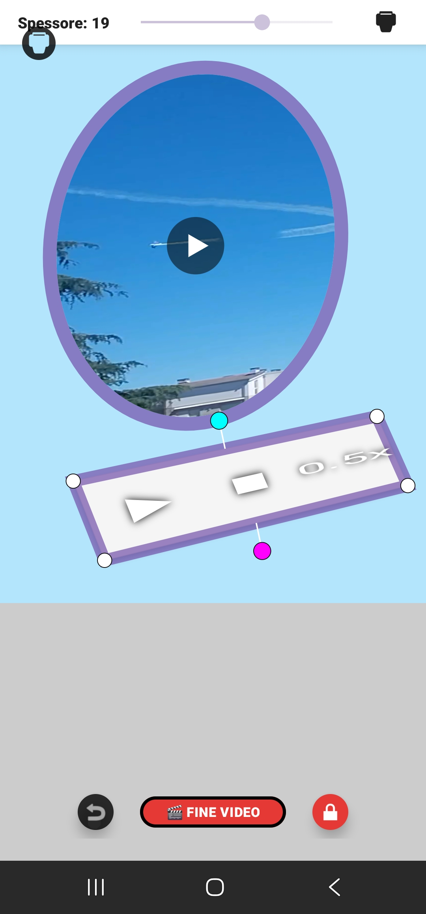
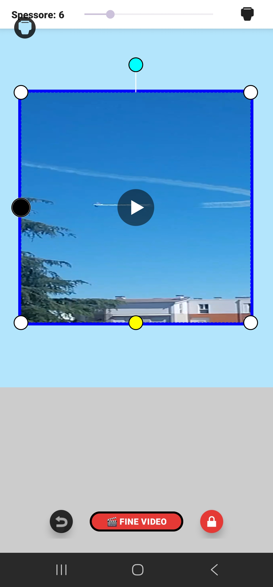
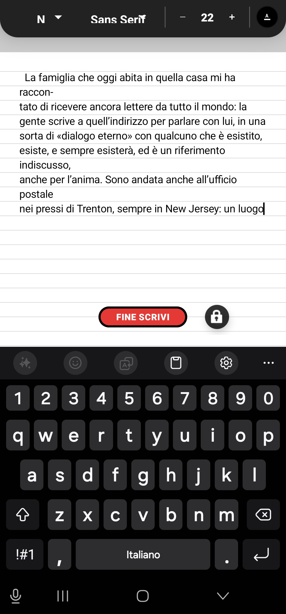
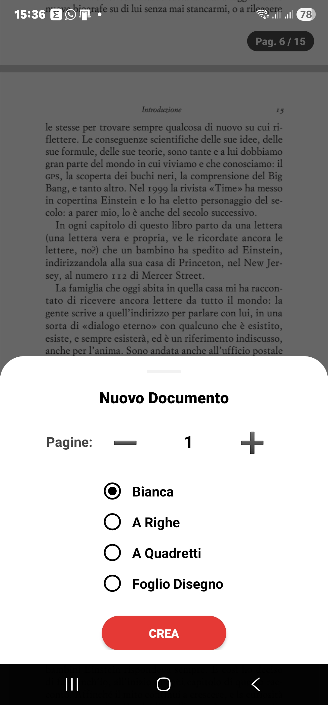
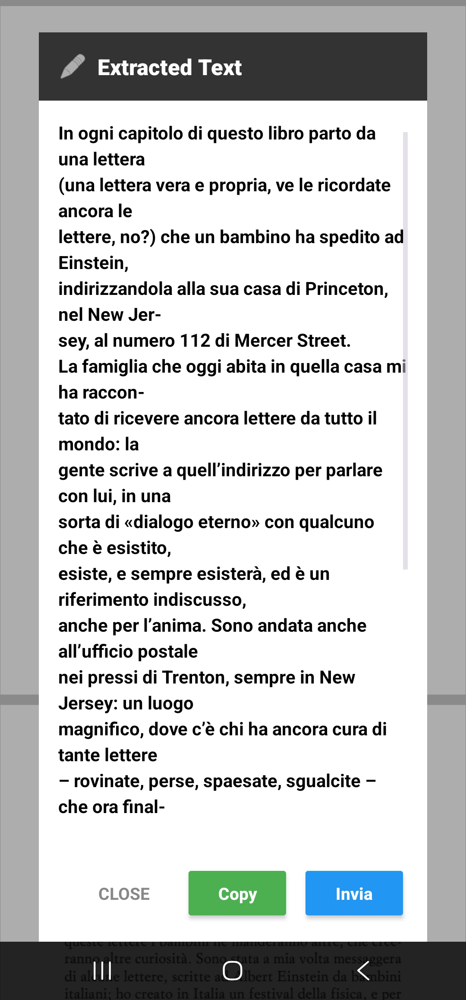
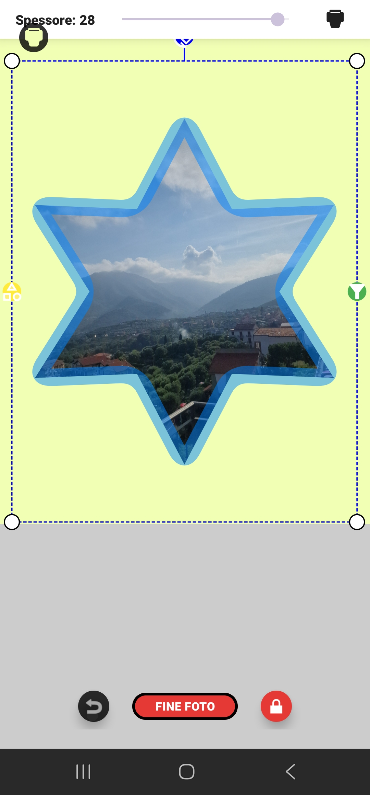
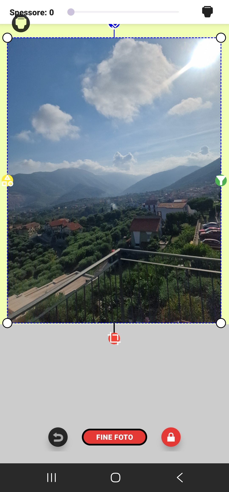
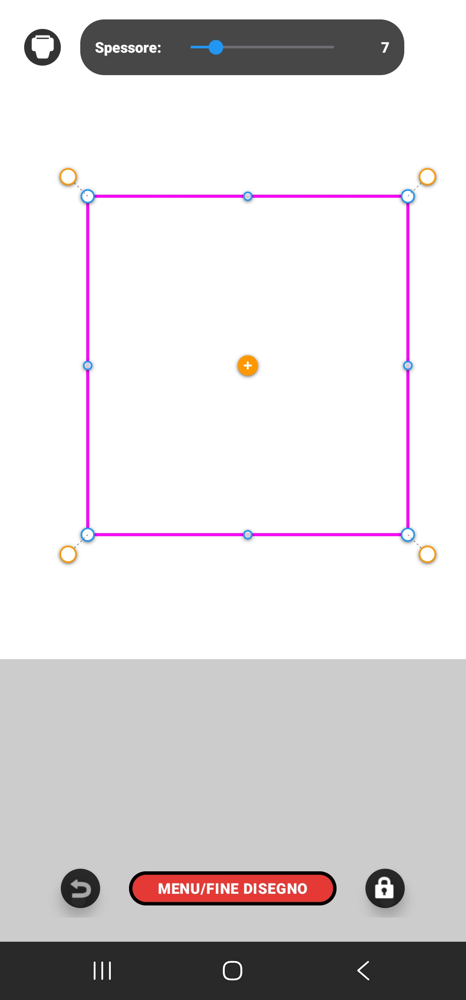
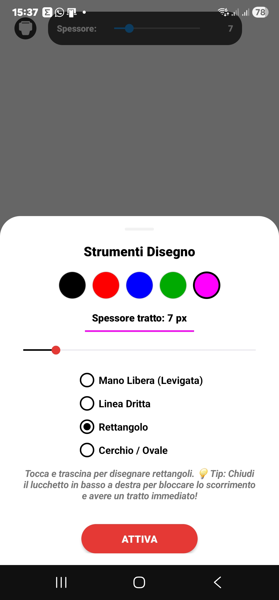

PdfForAll non è la solita applicazione di sola lettura o editing parziale. È una suite avanzatissima che supporta nativamente **tutte le annotazioni standard del formato PDF** (disegni a mano libera, note, moduli ed evidenziazioni). Introduce funzionalità uniche come l'importazione e la **conversione universale offline** di fogli di testo, Word ed Excel in PDF, la compilazione avanzata di moduli e tabelle, e l'inserimento di **Album Fotografici raddrizzati prospetticamente** e **Video MP4 Interattivi** perfettamente fusi nel foglio.
Non hai un file PDF di partenza? Da oggi puoi leggere qualsiasi formato da ufficio direttamente in tasca. Grazie al **convertitore universale offline integrato**, puoi importare e convertire all'istante file di testo semplice (.txt), documenti Word (.doc, .docx) e fogli di calcolo Excel (.xls, .xlsx) in pulitissimi fogli PDF A4 standard. Tutto il processo avviene sul tuo dispositivo in modo privato, sicuro e senza bisogno di connessione internet.
Compilare e completare un modulo non è mai stato così fluido e pulito. L'applicazione analizza il foglio e imposta automaticamente l'allineamento a sinistra calcolando la coordinata minima reale del margine. Se scrivi in una tabella, l'app rileva il numero di riga e inserisce dei blocchi di puntini automatici per mantenere l'allineamento. In più, riconosce se c'è uno spazio vuoto a sinistra di una riga e inserisce automaticamente la casella di spunta `[ ]` per le tue checkbox.
Una foto statica non basta per spiegare un concetto? **Incolla un vero video sul foglio!** PdfForAll ti permette di incorporare filmati MP4 interattivi direttamente sulle pagine del documento. Grazie all'esclusivo motore integrato **SerVideoPlayer**, la riproduzione è fluida, vettoriale e nativa: puoi controllare la traccia, ridimensionare, ruotare e persino modificare la velocità di riproduzione del filmato direttamente sul PDF.


Modifica, correggi e inserisci testo con una precisione millimetrica. Se devi correggere un documento scansionato, la funzione di Sostituzione analizza il colore del foglio, crea una maschera invisibile di "bianchetto virtuale" e ti permette di scriverci sopra. Con l'esclusiva **funzione di Estrazione OCR**, l'app analizza l'immagine e ti permette di selezionare il testo scansionato per copiarlo negli appunti, inviarlo o farlo leggere a voce alta.



Acquisisci qualsiasi testo o foglio cartaceo con la fotocamera. Grazie agli algoritmi di intelligenza artificiale Google ML Kit, l'app rimuove ombre, raddrizza le pieghe e pulisce lo sfondo. Supporta la **Scansione Multipla** di più pagine contemporaneamente e ti permette di **allegarle ad altre pagine** già esistenti nel tuo file PDF.
Crea album fotografici professionali sul tuo documento. Scatta una foto da qualsiasi angolazione e usa il Ritagliatore Prospettico per raddrizzarla sul foglio in modo ottimale. Ruota le immagini usando il Tentacolo a Rotazione Magnetica con calamita a 0/90/180 gradi, oppure ritagliale in forme geometriche o creative.


Traccia linee, forme geometriche, cerchi e rettangoli con il modellatore vettoriale a nodi. Applica la tua firma formale o commerciale: l'app crea uno speciale "Scudo di Protezione" che blocca l'immagine della firma mantenendola perfettamente orizzontale e solida. In più, abbiamo inserito il supporto ai **Timbri Emoji**! A differenza delle firme, le emoji possono essere ruotate a 360 gradi e ridimensionate usando un comodo tentacolo azzurro per dare sfogo alla tua creatività.


Organizza i documenti dei tuoi clienti ordinatamente in cartelle fisiche dedicate sul dispositivo. L'app riconosce a quale cartella appartiene il documento e lo organizza automaticamente, consentendoti di suddividere file di lavoro, studio o documenti personali per una consultazione rapida.
Gestisci lo stato del file. Salva in **Bozza** (con un elegante bordo arancione di avviso sulla cartella) per poter riaprire il PDF e modificare nuovamente tutti i video, le immagini e le forme inserite. Salva in **Archivio Sigillato** per appiattire e bloccare definitivamente tutti gli elementi in un file PDF protetto e immodificabile, pronto da spedire.
Esporta interi gruppi di cartelle in un singolo file compresso (.ZIP) per trasferire i tuoi dati su un nuovo telefono o inviarli a colleghi e collaboratori. All'estrazione dell'archivio, le nuove cartelle importate si illumineranno di azzurro per segnalarti immediatamente i nuovi elementi pronti.
PdfForAll elimina le barre degli strumenti infinite e racchiude tutta la sua potenza in 3 gesti naturali:
Attiva uno strumento, inserisce una riga di testo, applica una firma sul foglio o riproduce/mette in pausa i video.
Entra in modalità modellazione su foto/video, riapri la tastiera per correggere un testo, o attiva lo zoom rapido nel vuoto.
Apre le impostazioni avanzate degli strumenti, attiva la tavolozza RGB dello sfondo o avvia la selezione multipla di file.
PdfForAll abbatte ogni barriera di comunicazione. L'interfaccia si adatta istantaneamente alla lingua del tuo dispositivo o può essere cambiata manualmente tra 13 opzioni:
Scarica l'applicazione oggi stesso ed entra nel primo vero cantiere digitale per gestire al meglio studio, lavoro e tempo libero.